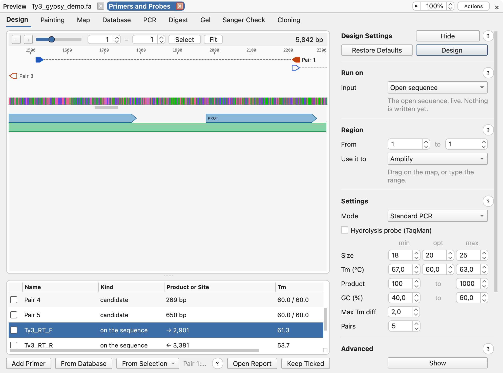
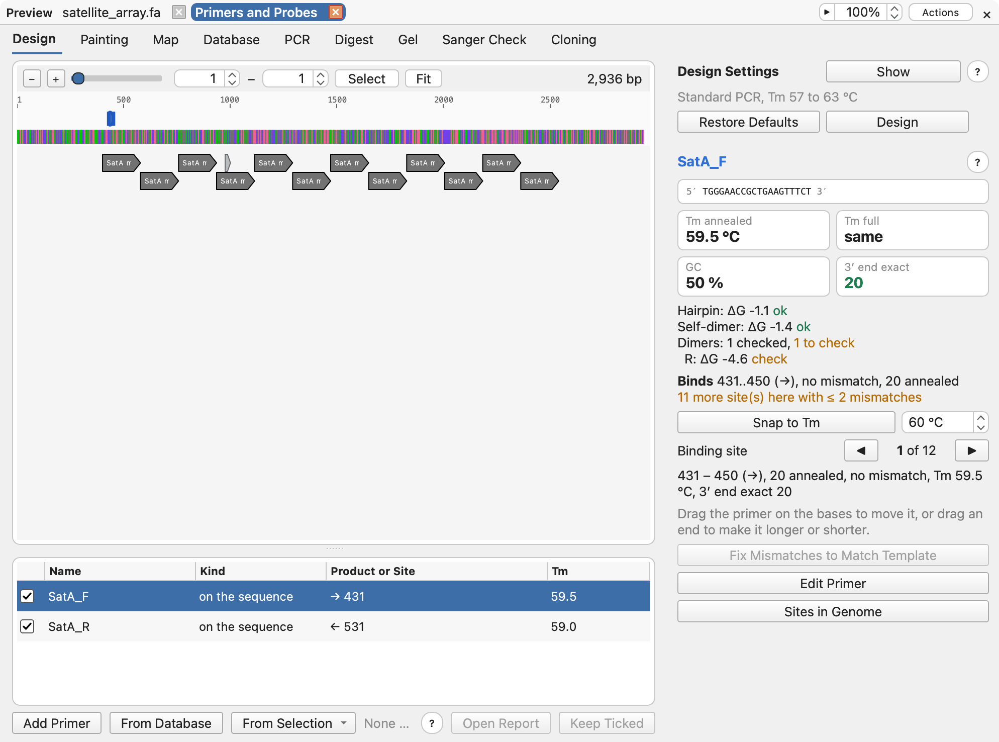
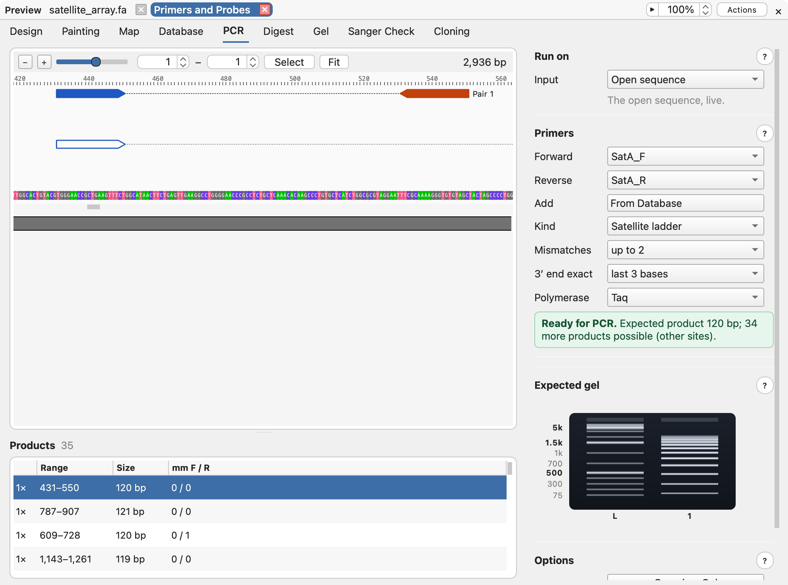
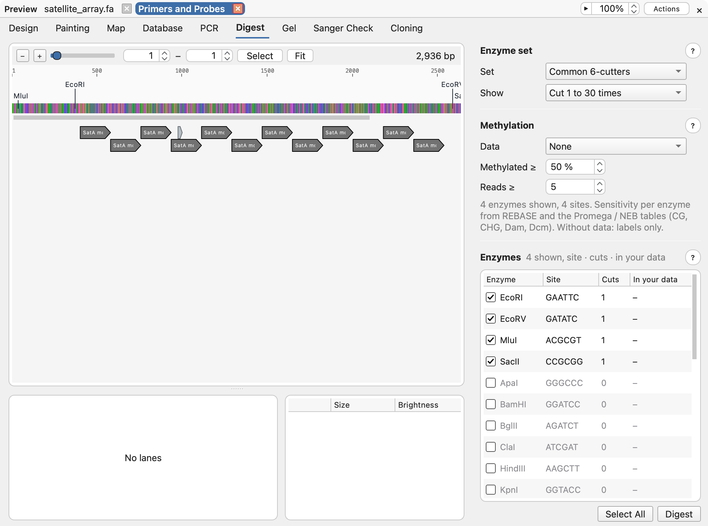
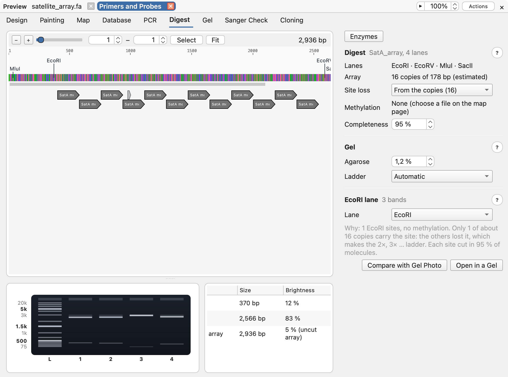
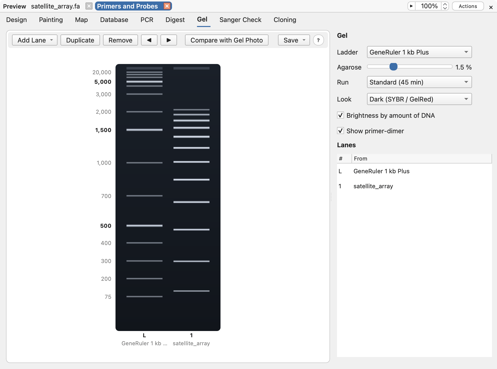
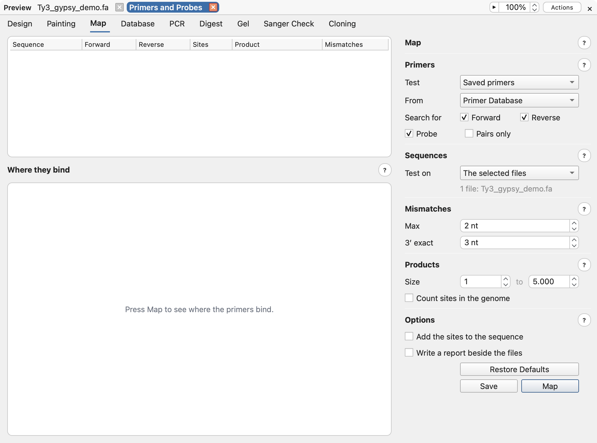
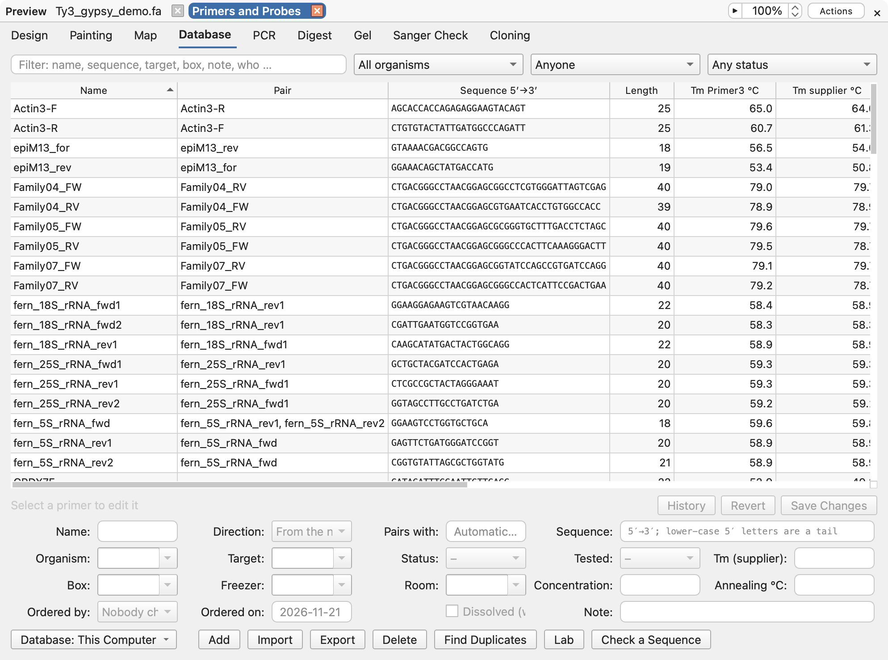
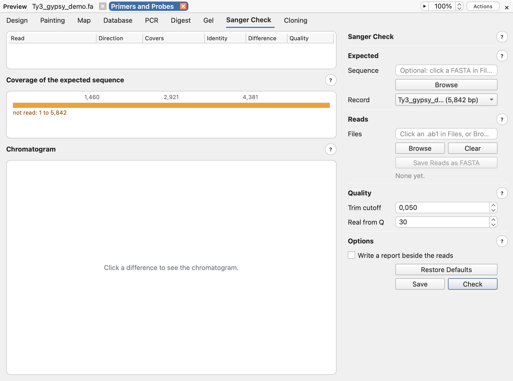
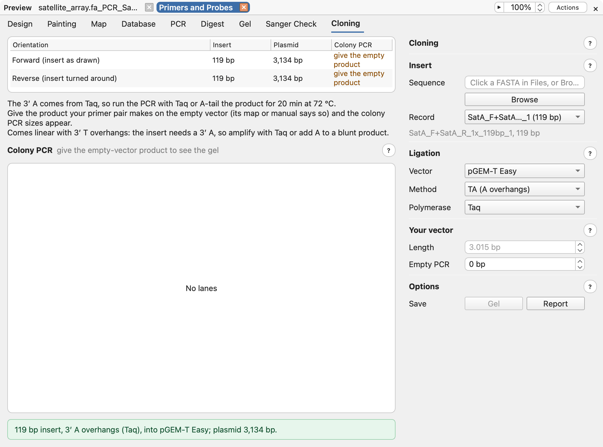

Chapter 12Primers and PCR
RepeatViewer designs PCR primers and FISH probes for repeats, shows primers on the sequence, runs in-silico PCR, draws the expected gel, and keeps the lab's primer inventory. Everything runs on your computer; nothing is sent online.
| Where | What |
|---|---|
| Tools → Primers and Probes → Design | Design primers (Primers), FISH probes for a repeat (Repetitive Probes) or painting probes (Chromosome Painting Probes) |
| Tools → Primers and Probes → Map | Test primers or probes against sequences, like Geneious' Map Primers |
| Tools → Primers and Probes → Database | The lab's primer inventory |
| Tools → Primers and Probes → In-silico PCR, Restriction Digest, Gel | The products of a PCR, a digest of the sequence, the expected gel |
| Tools → Primers and Probes → Sanger Check, Cloning | Check a clone against its Sanger reads; plan putting a product into a vector |
Every item opens the same tab, Primers and Probes, on the matching section.
The toolbar can also show a Primers and Probes button (File → Setting → Toolbar → Add buttons…). It offers the same items; right-click designs with the saved settings.
12.1Quick start
- Click the FASTA you want primers for in the Files panel.
- Choose Tools → Primers and Probes → Design → Primers. The Primers and Probes tab opens on the Design section, with your sequence.
- Drag on the map over the part to amplify, keep Mode on Standard PCR and click Design.
- The candidate pairs appear in the list under the map and as arrows above the sequence. Tick the pairs you want and click Keep Ticked: their primers are now on the sequence.
- Click the PCR section to see the products of the ticked primers and the expected gel.
12.2The workspace
Primers and Probes is one tab. The row on top holds its sections: Design, Painting, Map, Database, PCR, Digest, Gel, Sanger Check and Cloning. A section keeps what you did in it while you look at another one.

Design, PCR and Digest work on one sequence:
- Click a FASTA's name in the Files panel to work on it. Ticking a file's box does not change it. For a file that holds several sequences, Record in the Position row chooses the one to work on.
- The map shows the sequence. What a section adds is drawn in rows of its own above the bases, so no letter is covered: enzyme names, one row for each candidate pair, and the primer you are editing. A region you chose is a light tint behind them.
- The list under the map holds what Design found (candidate) and the primers already on the sequence (on the sequence); in PCR it holds the products. Drag the border between the map and the list to give one of them more room.
- The panel on the right holds the settings of the section.
The other sections are whole pages of their own. Map and Database open without a sequence.
Tip. A path field in the panel (for example Avoid file) is filled by a click in the Files panel: put the cursor in the field first, then click the file. To open a file in a tab of its own while the workspace is in front, right-click it and choose Open in Additional Tab.
12.3Design
The settings are in the panel on the right of the Design section.
Run on: Open sequence designs on the open sequence. The candidates appear in the list under the map and nothing is written until you press Keep Ticked or Open Report. Selected files runs the design as a job on every FASTA ticked in the Files panel and writes the report files beside them, with the same settings.
Mode is the kind of design. Changing it loads sensible starting values (size, Tm, product size); Restore Defaults brings them back.
| Mode | Use it for | Template | You get |
|---|---|---|---|
| Standard PCR | An ordinary pair | Any sequence | Ranked pairs and a virtual gel |
| qPCR | Quantitative PCR | The target; optionally a single-copy reference gene FASTA | Short amplicons (70 to 180 bp), an optional TaqMan probe, and a matched pair on the reference gene for ΔCt |
| Ladder PCR | Showing that a satellite sits in tandem arrays | Monomers (one or many) | Outward-facing primers inside one monomer. On genomic DNA they give a ladder: 1×, 2×, 3× … the monomer |
| Satellite repeat oligos | FISH probes for a satellite or repeat family | Monomers or copies, or a TAREAN dimer consensus | 35 to 60 nt oligos present in at least Min coverage of the copies, without hairpins, with a Tm for your hybridisation conditions, ready to order with a 5′ label (FAM, Cy3, Cy5 …) |
| Chromosome painting (Chorus2) | Oligo pools that paint whole chromosomes or regions | The genome FASTA | Thousands of single-copy 45 nt oligos along the chromosomes, an order file and a density plot (see below) |
For ladder PCR and FISH oligos, use many monomers (for example extracted from an
array) rather than one: the tool then keeps the parts shared by most copies. A
dimer consensus (TAREAN's consensus_dimer.fasta, the monomer written twice) is
recognised and cut back to one monomer.
Satellite repeat oligos have their own settings:
| Field | Meaning |
|---|---|
| Avoid the other selected files | Select the target family first, then the other families (one FASTA each). Probes are designed on the first file and every probe that matches the others is ranked last; the report names the sequences it matches |
| Leave out low-complexity and inverted repeats | Low-complexity stretches (DUST, as dustmasker -level 30), simple repeats and inverted repeats (arms of 12 nt or more, as EMBOSS einverted) are found first and no probe may touch them; the report lists them |
| Hybridisation | Formamide, SSC and temperature of the hybridisation (default 50 % formamide, 2× SSC, 37 °C) |
| Stringent wash | The same for the stringent wash (default 20 % formamide, 0.1× SSC, 42 °C); probes that would melt off in it are not offered |
| Probe | Probe concentration in the mix (default 100 nM) |
For these probes Tm is the Tm under the hybridisation conditions, not in a PCR buffer: SantaLucia (1998) nearest-neighbour values with the Owczarzy et al. (2004) Na⁺ correction (1× SSC = 195 mM Na⁺), minus 0.60 °C per % formamide (Hutton 1977). The default window (48 to 58 °C, about 52 °C for 50 to 60 nt) follows the TAREAN probe design protocol. The report gives each probe's Tm in the wash and how far it stays above the wash temperature.
Tip. Never use a PCR product amplified from genomic DNA as a hybridisation probe, even with one band of the expected size: clone and sequence it first, and keep short simple repeats in the clone out of the probe.
Primer Conditions:
| Field | Meaning |
|---|---|
| Primer size | Minimum, optimum and maximum length (nt) |
| Tm (°C) | Minimum, optimum and maximum melting temperature of the binding part |
| GC | Allowed GC content (%) |
| Product size | Allowed amplicon length (bp) |
| Max Tm difference | Largest Tm gap between the two primers of a pair |
| Pairs to return | How many pairs the report lists |
Advanced Settings ▸ adds poly-X, GC clamp, 3′ stability, probe size and Tm, 5′ tails (M13, T7, restriction sites, or your own) and the Tm calculation (salt, Mg²⁺, dNTP and oligo concentration).
Options: Ask which pairs to add here (for a run on selected files); Add them to the Database. Restore Defaults brings the starting values of the mode back, Save keeps the settings for the next time.
Design results
Next to the input:
gene.fa_primers.html the report (opens in Preview)
gene.fa_primers_details/
gene.fa_primers_primers.fa every primer, with order-ready names
gene.fa_primers_pairs.tsv table of pairs
gene.fa_primers_gel.svg virtual gel
gene.fa_primers.json all results
The report lists the pairs (Tm, GC, hairpin and dimer ΔG, product size, notes), the virtual gel and a Methods text paragraph for a paper. When nothing is found it explains why (for example how many primers failed on Tm or GC). Common fixes: widen the Tm range or the product size; for satellite oligos lower Min coverage or allow more mismatches.
12.4Design on the sequence
- Region: drag on the map or the bases; the range appears in From and to (or type it). Choose what the region is for: - Amplify: the primers sit outside the region, one on each side, and the product covers all of it. - Inside: both primers and the product stay inside the region. - Avoid: no primer may sit in the region (a SNP, a methylated site, a repeat).
For probes only Inside and Avoid are offered: a probe sits in the region or keeps out of it. 2. Settings: the mode, primer size, Tm, GC and product size; Advanced has the finer rules and the salt. 3. Design: the pairs appear in the list under the map, best first, and each pair gets a row of arrows above the sequence (the selected pair is filled, the others are outlined). Click a pair to see it; tick the ones you want and press Keep Ticked. They are added to this sequence's primers. Nothing is written before that. Open Report writes the usual primer report.
When the region and the settings cannot work together (for example a 1,500 bp region to amplify with products of at most 1,000 bp), an amber note says why before you run, and Fit changes the product range. Nothing is blocked: the settings guide the automatic design, your choice wins.
12.5Primers on the sequence
The list under the map shows the primers kept with this FASTA as on the sequence. Each is drawn as an arrow where it binds (blue: points right; orange: points left).
- Add Primer types a new one, From Database picks saved ones.
- From Selection makes a primer from bases on the sequence: drag over 10 to 60 bases on the map, then choose Forward Primer (the bases as they are) or Reverse Primer (their reverse complement). The primer appears on the sequence and can be dragged or edited like any other. When the selection does not fit, the note by the list says why.
- Click a primer to see its details in the panel on the right and jump to it: Tm, hairpin and self-dimer ΔG, where and how well it binds. While a primer is selected the design settings are folded to one line, Design Settings; Show opens them again. Clicking a candidate also brings them back.
- The details sum up the dimers with the other ticked primers in one line (for example Dimers: 6 checked, all ok) and list only the pairs to look at. Show All lists every pair, Hide folds the good ones away again. Hover the list to read the full primer names.
- The selected primer is drawn as a bar in its own row right above its bases. Drag the bar to move the primer, or drag one of its ends to make it longer or shorter. A base that does not match the template is red on the primer.
- Snap to Tm shortens or lengthens the primer along the template to reach a Tm; Fix Mismatches to Match Template makes it match this sequence; Edit Primer opens the primer with its tail and checks; Sites in Genome shows where it binds in a genome.
- Right-click a primer in the list to edit it, copy its sequence, add it to the Primer Database or remove it.
- The tick marks the primers that the PCR section uses.
A tail is the 5′ part that does not bind (lower-case letters). It is copied into the product from cycle 3 on, so two Tm values are shown: annealed (the binding part, mismatches included) and full (the whole oligo).
Edit Primer shows the primer on its best site, with mismatches in red and matching 3′ bases in green; Site steps through other sites; − + make either end shorter or longer along the template; 5′ tail adds a restriction site (with padding bases so the enzyme cuts), a sequencing or promoter tail, or your own; and the dimer and hairpin checks give ΔG at 37 °C (below −9 kcal/mol for dimers or −3 for hairpins is a warning).
Sites in Genome: each genome sequence drawn on one scale, forward sites as ticks above the bar, reverse sites below (darker = fewer mismatches), and for a qPCR pair the number of products per haploid genome, the value to expect in a copy-number assay.

Primers are saved in a hidden name.primers_RV.json next to the FASTA and
follow it when it is renamed or moved.
12.6In-silico PCR
Tools → Primers and Probes → In-silico PCR, or the PCR section of the workspace. The products are listed under the map and drawn in the expected gel in the panel. There is no Run button: the products update by themselves when you change anything.

The panel, from top to bottom:
| Section | What it holds |
|---|---|
| Run on | Input: Open sequence (the sequence in the map, live) or Selected files (every FASTA ticked in the Files panel, so one pair can be tested on many satellite families at once; the products of all files are listed together, each with its file) |
| Primers | Forward and Reverse: primers on this sequence. From Database puts saved primers on the sequence so they can be chosen. Kind, Mismatches, 3′ end exact and Polymerase set the reaction |
| Products | Every product the two primers make, best first: Range, Size and mm F / R (mismatches of the forward and the reverse primer at that site). Click a product to see it on the sequence |
| Expected gel | The products next to a size ladder |
| Options | Open in a Gel, Bench Card, Save Products |
- Kind: Standard lists every product. Satellite ladder groups the products that step by a monomer and labels them 1×, 2×, 3×.
- Mismatches (none, or up to 1 to 4 per primer) and 3′ end exact (no rule, or the last 2 to 5 bases) decide which sites count. Polymerase sets how fast long products fall off.
- The status box under the primers says what to expect. Green: Ready for PCR, with the expected product size. Amber: the expected product is longer or shorter than the product range set in Design. That is allowed (the tube still makes it); Set Range to … bp changes the range in Design to fit. No product means the two primers do not face each other on this sequence.
Open in a Gel makes a gel document from this PCR, next to the sequence, that you can change (lanes, agarose, ladder; see The gel).
Save Products writes, next to the sequence, <template>_PCR_<primers>.fa
(the products) and …_details/ (_products.tsv, _history.json,
_result.json). The products file opens like any multi-FASTA, with the primer
sites and the template's features on each product.

Bench Card: volumes per reaction and for all reactions plus extra (template added to each tube); annealing from the lower primer Tm (Taq 3 °C below, Phusion or Q5 3 °C above); extension from the longest product wanted (Taq 1 min per kb, Phusion or Q5 20 s per kb); freezer places from the Primer Database. Change the numbers on the right, then Save PDF or Print.
12.7Restriction digest
Tools → Primers and Probes → Restriction Digest, or the Digest section of the workspace. The enzymes that cut the sequence are named in a row above the bases on the map and listed in the panel.

| Section | What it holds |
|---|---|
| Enzyme set | Set: which enzymes to look at. Methylation-sensitive holds the enzymes with known CG or CHG sensitivity (HpaII and MspI as a pair). Show: enzymes that cut this often are ticked and drawn on the sequence |
| Methylation | Data: a Bismark .cov or modkit bedMethyl file. Methylated ≥ and Reads ≥: a site counts as blocked when a cytosine of the site is methylated at least this much, with at least this many reads, in a context that blocks the enzyme |
| Enzymes | The list: Enzyme, Site, Cuts (sites on this sequence) and In your data (sites probably not cut because of methylation in your file) |
- Click an enzyme to go to its first site. Tick or untick any enzyme; only the ticked ones are drawn and digested.
- Select All ticks every enzyme in the list; press it again to untick them all.
- With methylation data, the rows of the chromosome named like this sequence are read (an extracted region named chrom:start-end is shifted to its own positions). Blocked sites are drawn red and dashed: probably not cut. Without data the map shows the labels only.
- The sensitivity of each enzyme (CG, CHG, Dam, Dcm) follows the Promega and NEB tables and REBASE (McClelland et al. 1994). Dam and Dcm only matter for DNA grown in E. coli.
Digest shows the ticked enzymes as a gel, and the panel changes to the result. Enzymes on top goes back to the list.

| Section | What it holds |
|---|---|
| Digest | Lanes: one for each ticked enzyme; with methylation data, an enzyme with blocked sites gets a second lane without the data, to compare. Array: the repeat period, from monomer annotations (a name with three or more copies), otherwise estimated from the sequence. Site loss and Completeness (below) |
| Gel | Agarose and Ladder (Automatic or one you choose). Brightness follows DNA mass; very many faint bands of nearby sizes run as a smear |
| Lane | The brightest bands of the chosen lane: Size (n× is n monomers) and Brightness (the share of the lane's DNA in that band) |
- Site loss: From the copies uses the sites as they are in this sequence, so copies that lost the site by mutation give the 2×, 3× … ladder. A site in every copy adds the missing sites at the array period.
- Completeness: the share of molecules cut at an open site. With methylation data, each site is cut with completeness × (1 − share methylated in a blocking context).
- Open in a Gel writes a gel document you can change; Compare with Gel Photo puts your real gel next to this one (see The gel).
12.8The gel
A .rvgel file opens as an agarose gel, in the Gel section of the workspace
(every Open in a Gel button, Tools → Primers and Probes → Gel, or a
click on a gel in the Files panel while the workspace is in front). Every lane is a ladder, the products of
a PCR run, or products cut with a restriction enzyme. A gel that is a file is
saved as it changes.
A new, empty gel (Tools → Primers and Probes → Gel) holds only a ladder and
is not a file yet. Save → Gel writes it as a .rvgel in the current
folder; from then on it saves itself like any gel. If you leave a new gel that
you changed and did not save, RepeatViewer asks first: Save, Discard
(throw it away) or Cancel (stay on the gel).

| Control | What it does |
|---|---|
| Add Lane, Duplicate, Remove, ◀ ▶ | Edit and order the lanes |
| Ladder | The size marker (GeneRuler, NEB and others) |
| Agarose | Which sizes separate: 0.7 % for 1 to 12 kb, 3 % for 50 to 1,000 bp |
| Run | How far the front got; small bands can run off a long run |
| Look | Dark (SYBR, GelRed) or light (stained) gel |
| Brightness by amount of DNA | A band's brightness follows its mass (amount × length), as with SYBR, so short products look fainter |
| Show primer-dimer | Draw the primer-dimer smear |
| Cut with (per lane) | Digest the lane's products with a restriction enzyme |
| Save | Gel (the .rvgel document), or the figure as SVG, PNG (300 dpi) or PDF |
Hover a band to see what it is, click to select it, double-click to open the products file.
Compare with Gel Photo puts a picture of your real gel (PNG, JPG or TIFF) next to the in-silico one. Lanes and bands are found for you. Choose which photo lane holds the ladder (its bands give the size scale) and which gel lane each photo lane should match. Every band is then named: matched (within 7 %), off-target (a predicted off-target product), unexplained (try the PCR with more mismatches), and expected bands not seen.
12.9Map: test primers on sequences
Tools → Primers and Probes → Map → Primers (or Repetitive Probes). It opens as the Map section of the workspace, with its settings on the right.

- Inputs as in Design. Test primers on: every sequence, or the consensus of an alignment.
- Primers: Test specific primers (type a sequence or pick a saved one), or Search for saved primers that match (from the Primer Database or a primers FASTA; forward, reverse, probe; pairs only).
- Products: optional included and target regions, product size range, optimal size.
- Mismatches: maximum mismatches, and how many 3′ bases must match exactly.
- Advanced Settings: Tm conditions, and counting sites and products in a genome (both strands; every site within the allowed mismatches is found, also on a whole genome).
Output: <name>_primer_map.html with binding sites, predicted products and
a gel.
12.10Database: the lab's primer inventory
The Database is the record of every primer the lab has: sequence and Tm, what it amplifies and in which organism, where the tube is, whether it is in stock and whether it worked, who ordered it and when, and every change since.

It opens as the Database section of the workspace.
The page
- Filter searches every field; the boxes next to it show one organism, one person or one status.
- Select a primer to edit it below the table, then Save Changes. Select several to set a field on all of them at once (for example a new box, or Used up).
- History lists every change to the selected primer: who, when, what.
- Pair is found from the names (
_for/_rev,_fwd/_rev1,_FW/_RV,_F/_R); write it in Pairs with when the names do not show it. - Two Tm columns: Tm Primer3 is calculated by RepeatViewer; Tm supplier is the value from the synthesis report. They differ because each uses its own method and concentrations.
- Lab holds the lists the fields choose from: People (with roles; rename, merge two entries for one person, or remove; people who ordered primers stay as former members), Places (rooms, freezers, boxes), Organisms and Targets.
- Find Duplicates: the same sequence under two names, reverse complements, one primer inside another.
- Export: the whole table (TSV), a FASTA, or an order sheet.
- Import: a CSV, TSV or Excel sheet. The header row is found and known columns are read (name, sequence, organism, target, Tm, dissolved volume, ordered by, ordered on, box, freezer, room, status, tested, annealing, concentration, pair, note). Before importing it shows what is new, what is already there (same sequence under another name is kept as Other names) and which rows are skipped. Importing again later only adds what is new.
Sharing with the lab
- The button at the bottom left says where the database is: Database: This Computer ▾, or the name of a shared folder.
- One person: Database ▾ → Shared Database… and choose the lab's folder in a synced cloud folder (Sciebo, Dropbox). If there is no database there yet, RepeatViewer offers to make one and to copy your primers into it.
- Everyone else: Database ▾ → Shared Database… and choose the same lab folder in their own synced folder.
- If the shared database cannot be found (not synced yet, moved), a bar says so and offers Try Again or Use This Computer; nothing switches silently.
- The first time you change something, you are asked for your name; it appears in the history (Lab → Change Your Name…).
Each person and computer writes only its own change log, so the cloud service never has to choose between two versions of a file and no change is lost. If two people change the same field of one primer, the later change wins.
Check a new sequence against the stock
Before designing and ordering for a new plant, see what the lab already has: select the primers to test (none = all) and click Check a Sequence. Give the Sequence (click a FASTA in the Files panel) and how strict to be (product size; mismatches, by default up to 2 but with the last 3 bases at the 3′ end matching). The report starts with From your Primer Database:
- Ready pairs: two saved primers that give a product, with size, mismatches and where the tubes are. Saved pairs, exact matches and pairs that worked before come first.
- Single primers that bind: no saved partner gives a product; one new partner is enough.
12.11Chromosome painting (Chorus2)
Choose Tools → Primers and Probes → Design → Chromosome Painting Probes. It opens as the Painting section of the workspace. Chorus2 (Zhang et al. 2021) finds oligos that occur once in the genome along every chromosome. RepeatViewer runs it, or reads what it produced on a server, and then picks the pool you order.
Chorus2 tab:
- Run Chorus2 here: give the Genome; optionally paint only one chromosome or region. A genome of a few Gb takes hours and much memory: a server is better.
- Import results from the server: choose the Chorus2 BED.
- Chorus2 settings: probe length (45 nt), maximum homology (75 %), minimum dTm (10 °C), k-mer step (5 bp), ploidy, threads.
- NGS Filter (optional): genomic reads give each probe a k-mer score; probes in the lowest and highest score quantiles (default 10 % and 90 %) are dropped.
- Copy Server Command: the exact command lines for the server.
Install Chorus2 once, in its own conda environment (it needs an older pandas):
conda create -n chorus2 -c conda-forge -c bioconda python=3.9 "pandas<2" numpy cython pyfasta "primer3-py<2" pybigwig pybedtools kmer-jellyfish bwa
conda run -n chorus2 pip install --no-deps git+https://github.com/zhangtaolab/Chorus2.git
On a server:
conda activate chorus2
Chorus2 -g genome.fa -i genome.fa -s chorus2_out -t 16 -l 45 --homology 75 -d 10 --step 5 --ploidy 2 --docker True
Copy chorus2_out/genome.fa.bed back (or probes_kmer_score.bed after the
NGS filter) and import it. On Windows, run Chorus2 on a Linux server and import.
Selection tab:
| Field | Meaning |
|---|---|
| Min gap between probes | Neighbouring probes at least this far apart (25 bp) |
| Strand | Both (every second probe reverse-complemented, the Chorus2 default) or Plus |
| Amount | All probes, a Density (probes per kb; painting usually needs 0.1 to 1 per kb), or a Pool size (total number, spread evenly) |
| Regions | Keep probes only here, for example chr1, chr2:1-5000000 |
| Pool name, 5′ / 3′ adapter | Used in oligo names; adapters (for example T7) go into the order file only |
Results:
genome.fa_painting.html report: counts, density plot, per chromosome, methods
genome.fa_painting_details/
genome.fa_painting_probes.bed probes (BED, for example for IGV)
genome.fa_painting_probes.fa probe sequences
genome.fa_painting_order.tsv order file (adapter + probe + adapter)
genome.fa_painting.json all results
chorus2/ Chorus2's own files (when run here)
Painting pools are not added to the Primer Database (they hold thousands of oligos); use the order file. Too few probes for the pool size: lower the gap, widen the regions or the NGS score window, or rerun Chorus2 with a smaller k-mer step or a higher maximum homology.
12.12Sanger Check
Tools → Primers and Probes → Sanger Check checks a clone against its Sanger reads: each read is trimmed by quality, aligned to the sequence the clone should carry, and every difference is shown with its chromatogram.

| Section | What it holds |
|---|---|
| Expected | Sequence: the sequence the clone should carry (click a FASTA in the Files panel, or Browse). Record chooses one when the file holds several |
| Reads | Files: the .ab1 files from sequencing (click them in the Files panel, or Browse). Plain .seq or FASTA reads work too, but without a chromatogram or quality. Clear takes all reads off the list. Save Reads as FASTA writes the good part of every read as a FASTA file beside it |
| Quality | Trim cutoff: how strictly the ends are trimmed (Mott's rule, as phred uses). Real from Q: a difference below this quality is doubtful (the machine, not the clone) |
| Options | Write a report beside the reads (an HTML page); Restore Defaults, Save (keep these settings) and Check |
The expected sequence is optional. Without one, click an .ab1 read to look at
its chromatogram and quality, or save the reads as FASTA.
With an expected sequence, each read is aligned in both directions:
- The table lists every read: Read, Direction, Covers, Identity, Difference and Quality.
- Coverage of the expected sequence shows which part each read covers and where the differences are. Amber marks what no read reached: the clone is only confirmed where a read went.
- Click a difference to see the chromatogram around it. The four dyes are G black, A green, T red, C blue; the called base is on top, the expected one underneath when they differ. A clean single peak with a high quality score is a real difference in the clone; a double peak, a shoulder or a low score is a poor call.
- The verdict under the boxes is green only when the reads cover every base and nothing is left over.
12.13Cloning
Tools → Primers and Probes → Cloning plans putting a PCR product into a vector: the plasmid size in both orientations and the band a positive colony shows in colony PCR.

| Section | What it holds |
|---|---|
| Insert | Sequence: the PCR product, with the primer tails already on it (click a FASTA in the Files panel, or Browse). Record chooses one when the file holds several |
| Ligation | Vector: pGEM-T Easy, pJET1.2/blunt or your own. Method: TA needs the 3′ A that Taq leaves; Blunt needs a proofreading product; Restriction uses the sites in the primer tails, and shows Enzymes for the two ends. Polymerase |
| Your vector | Length of the vector, and Empty PCR: the product your colony-PCR pair gives on the vector with no insert (the vector's map or manual says it) |
| Options | Gel saves the colony PCR gel; Report saves a report of this cloning plan |
The table lists both orientations of the insert (Orientation, Insert, Plasmid, Colony PCR). A TA or blunt ligation gives both; two different enzymes give only the first. The colony PCR product is the empty-vector product plus the insert, so a colony with the insert runs that much higher than one without. With the empty-vector product given, the page also tells how far a sequencing read gets into the insert.
Tip. No vector sequence ships with RepeatViewer, so every size here comes from the numbers you give, never from a guessed map.
12.14How it works
Primer picking, Tm, and the hairpin and dimer checks use Primer3 (primer3-py). The binding-site search (Map, coverage on copies, genome counts) is RepeatViewer's own, on both strands: small inputs are scored at every position; on a genome, every version of each primer's 3′ end within the allowed mismatches is looked up, so the same sites are found. Ladder PCR and FISH oligos build on these. Ladder primers are picked on the dimer with Primer3's template mispriming check switched off, because every primer in a tandem repeat binds the template many times. Chromosome painting uses Chorus2 (MIT licence) in its own conda environment.
References: Untergasser et al. (2012) Nucleic Acids Research 40:e115 (Primer3). Owczarzy R et al. (2004) Biochemistry 43:3537–3554 (salt correction). Hutton JR (1977) Nucleic Acids Research 4:3537–3555 (formamide). Morgulis A et al. (2006) Journal of Computational Biology 13:1028–1040 (DUST). Zhang T, Liu G, Zhao H, Braz GT, Jiang J (2021) Plant Biotechnology Journal 19:1967–1978 (Chorus2).